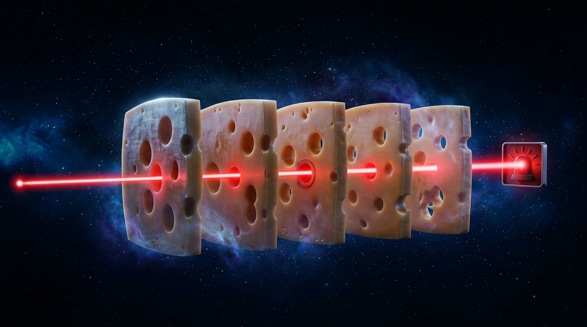
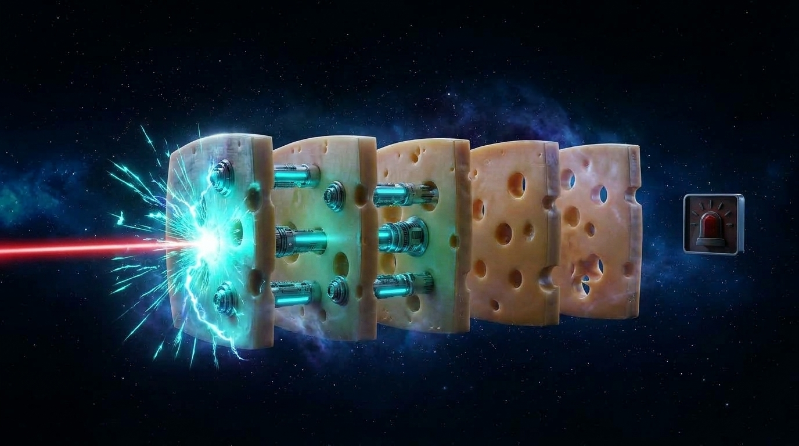

Disaster is never a single failure.
It’s the quiet alignment of invisible gaps.
Rooted in Prof. James Reason’s System Safety model, high-consequence disasters never stem from a single colossal error but a series of missteps and micro vulnerabilities.


Formulated by Prof. James Reason (1990) and proven in every major inquiry from Piper Alpha to Macondo: disasters do not strike because an entire platform failed. They occur when unmonitored human handovers between siloed disciplines momentarily line up into an unbroken failure ray.
No single engineer makes a ₹200 Cr catastrophic blunder. Capital vanishes in the handovers between disciplines—where a 1.48m cable stretch or an unindexed mudlog quietly slips between shifts until minor latent gaps align into an unbroken failure ray.
Enterprise agents are not generative toys or speculative LLMs. Agents are governed, headless microservices running scientific math (NumPy, SciPy, WITSML parsers) that slot directly into human handover points to permanently seal every hole in the Swiss cheese.
Before selecting a technology, energy operations demand five non-negotiable engineering criteria for the defensive plug.